Soru 1Cevap: E
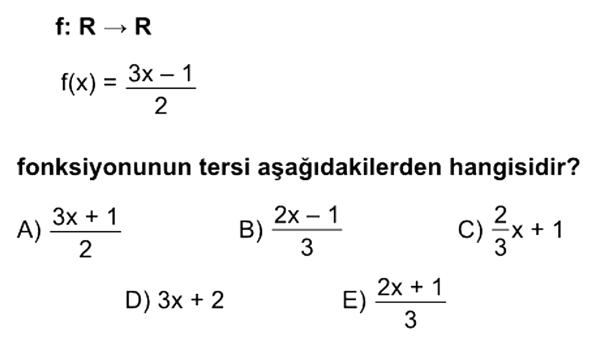
Çözüm
- $y=\dfrac{3x-1}{2}\Rightarrow2y=3x-1$.
- $x=\dfrac{2y+1}{3}$.
- $f^{-1}(x)=\dfrac{2x+1}{3}$ (E).
Cevap: E
Soru 2Cevap: C
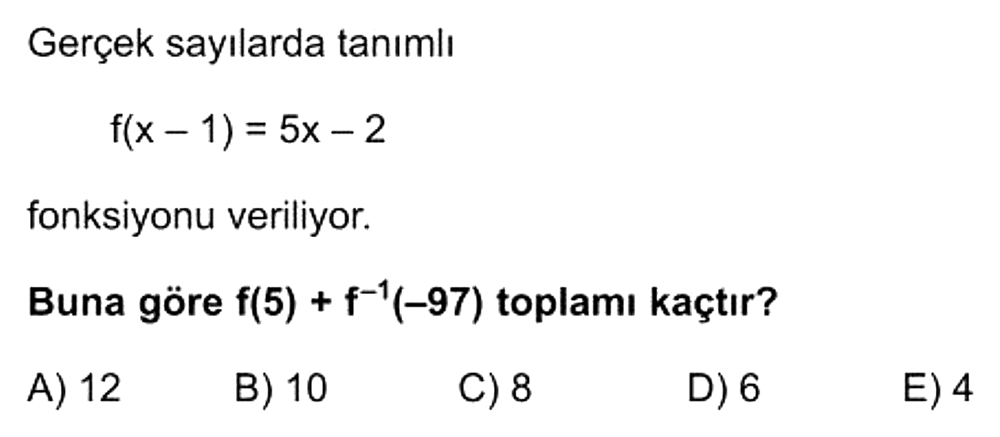
Çözüm
- $f(x-1)=5x-2\Rightarrow f(x)=5x+3$; $f(5)=28$.
- $f^{-1}(-97)$: $5x+3=-97\Rightarrow x=-20$.
- Toplam $8$ (C).
Cevap: C
Soru 3Cevap: B
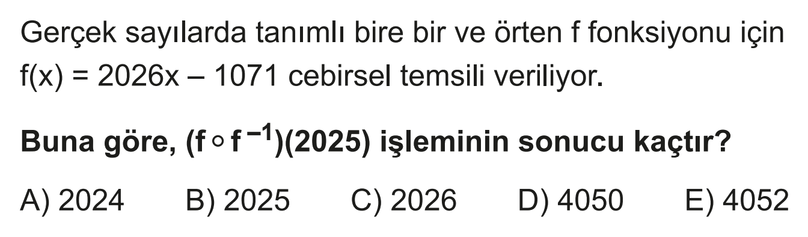
Çözüm
- Bire bir ve örten $f$ için $(f\circ f^{-1})(x)=x$ olur.
- Bu eşitlik her $x$ için birim fonksiyonu verir.
- $(f\circ f^{-1})(2025)=2025$ (B).
Cevap: B
Soru 4Cevap: D
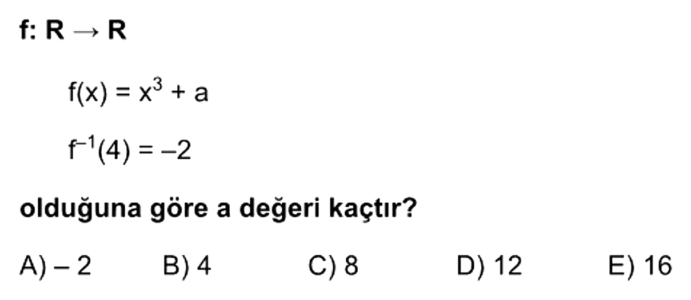
Çözüm
- $f^{-1}(4)=-2\Rightarrow f(-2)=4$.
- $-8+a=4$.
- $a=12$ (D).
Cevap: D
Soru 5Cevap: C
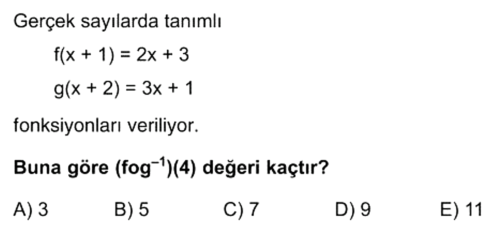
Çözüm
- $f(x+1)=2x+3\Rightarrow f(x)=2x+1$; $g(x+2)=3x+1\Rightarrow g(x)=3x-5$.
- $g^{-1}(4)$: $3x-5=4\Rightarrow x=3$.
- $f(3)=7$ (C).
Cevap: C
Soru 6Cevap: B
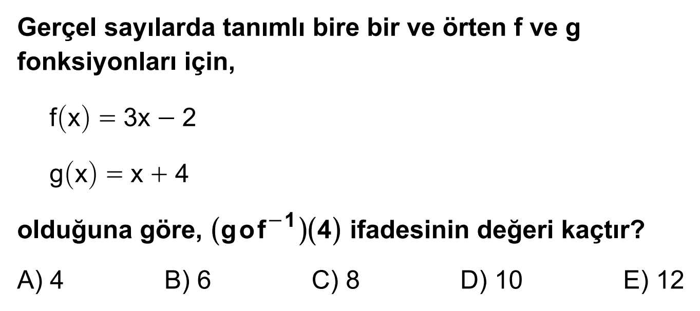
Çözüm
- $f^{-1}(4)$: $3x-2=4\Rightarrow x=2$.
- $(g\circ f^{-1})(4)=g(2)$.
- $=6$ (B).
Cevap: B
Soru 7Cevap: B
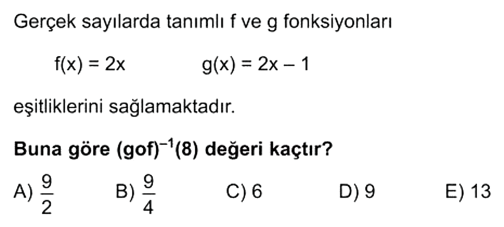
Çözüm
- $(g\circ f)(x)=2\cdot2x-1=4x-1$.
- $(g\circ f)^{-1}(8)$: $4x-1=8$.
- $x=\dfrac94$ (B).
Cevap: B
Soru 8Cevap: B
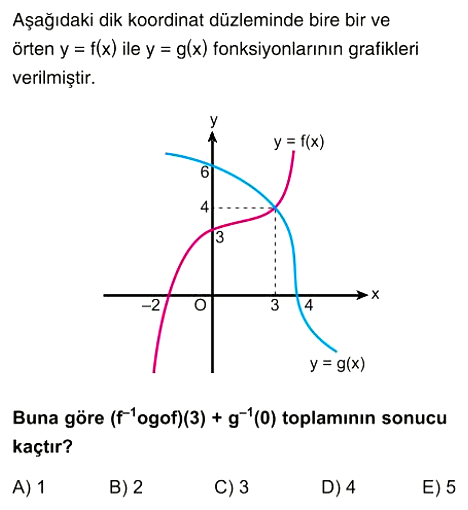
Çözüm
- Grafikte $f(3)=4$, $g(4)=0$, $f(-2)=0$: $(f^{-1}\circ g\circ f)(3)=-2$.
- $g(4)=0$: $g^{-1}(0)=4$.
- Toplam $2$ (B).
Cevap: B
Soru 9Cevap: A
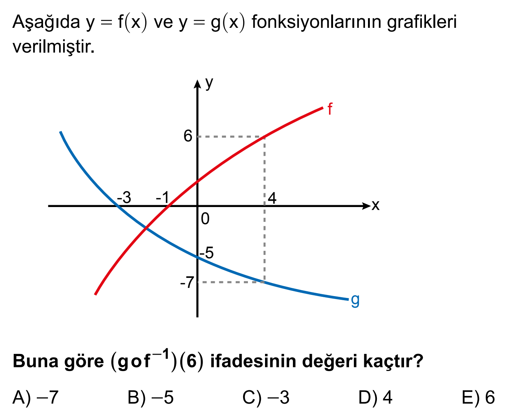
Çözüm
- Grafikte $f(4)=6$: $f^{-1}(6)=4$.
- $(g\circ f^{-1})(6)=g(4)$.
- Grafikte $g(4)=-7$ (A).
Cevap: A
Soru 10Cevap: C
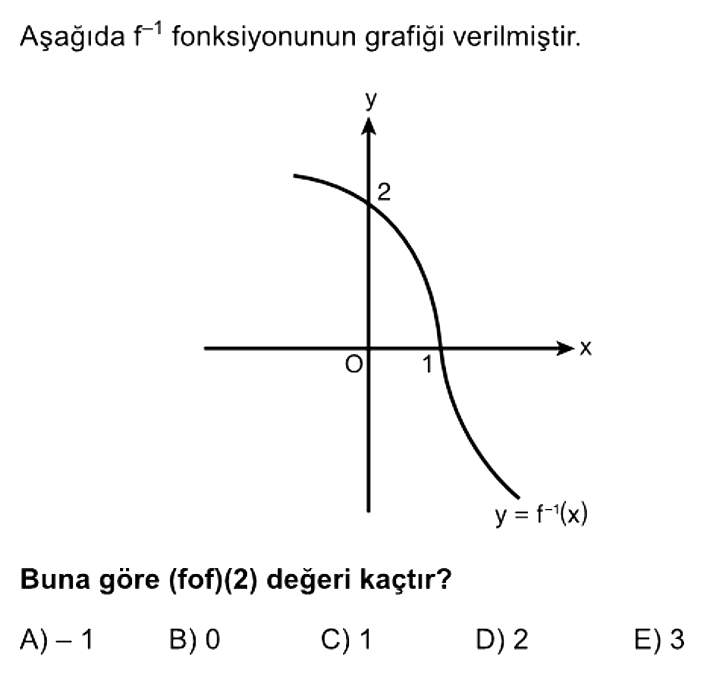
Çözüm
- $f^{-1}(0)=2\Rightarrow f(2)=0$.
- $f^{-1}(1)=0\Rightarrow f(0)=1$.
- $(f\circ f)(2)=f(0)=1$ (C).
Cevap: C
Soru 11Cevap: E
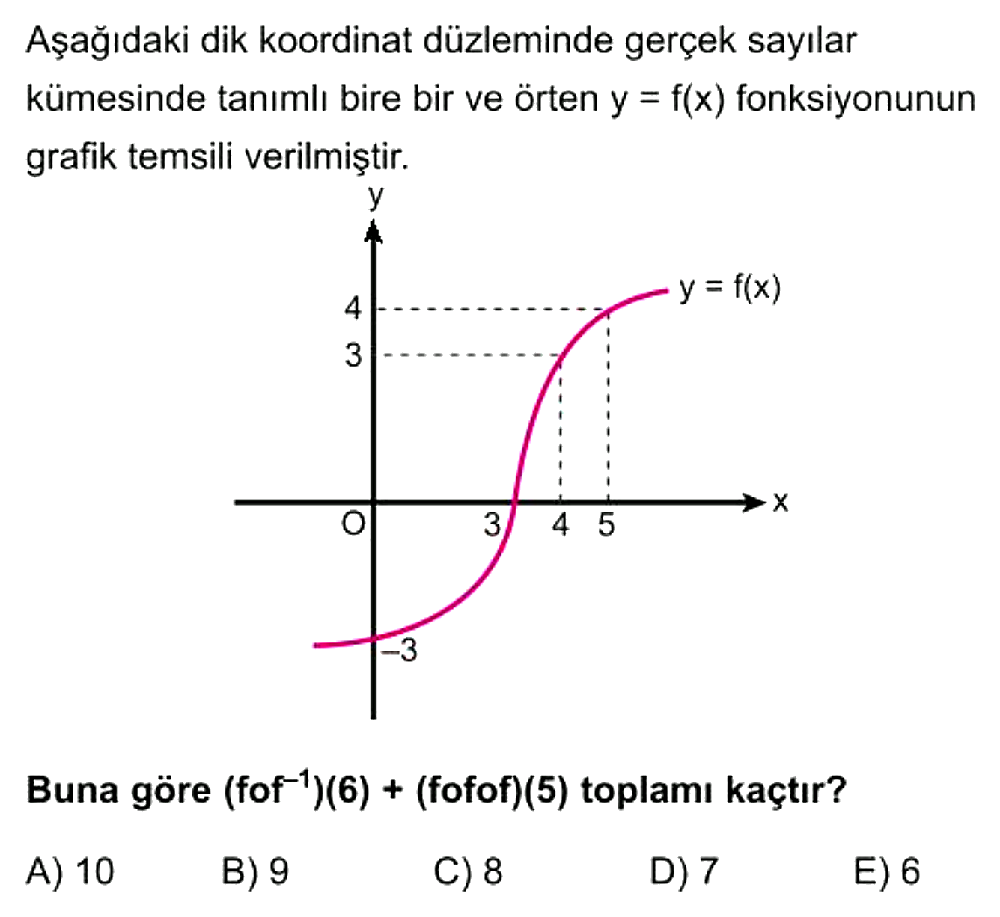
A)$10$B)$9$C)$8$D)$7$E)$6$
Çözüm
- $(f\circ f^{-1})(6)=6$.
- Grafikten $f(5)=4$, $f(4)=3$, $f(3)=0$: $(f\circ f\circ f)(5)=0$.
- Toplam $6$ (E).
Cevap: E
Soru 12Cevap: E
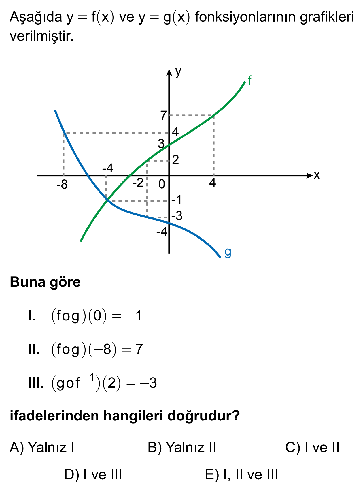
Çözüm
- Grafikten $g(0)=-4$, $f(-4)=-1$: $(f\circ g)(0)=-1$ (I doğru).
- $g(-8)=4$, $f(4)=7$: $(f\circ g)(-8)=7$ (II doğru).
- $f(-1)=2$ olduğundan $f^{-1}(2)=-1$; $g(-1)=-3$ (III doğru). Cevap E.
Cevap: E
Soru 13Cevap: E
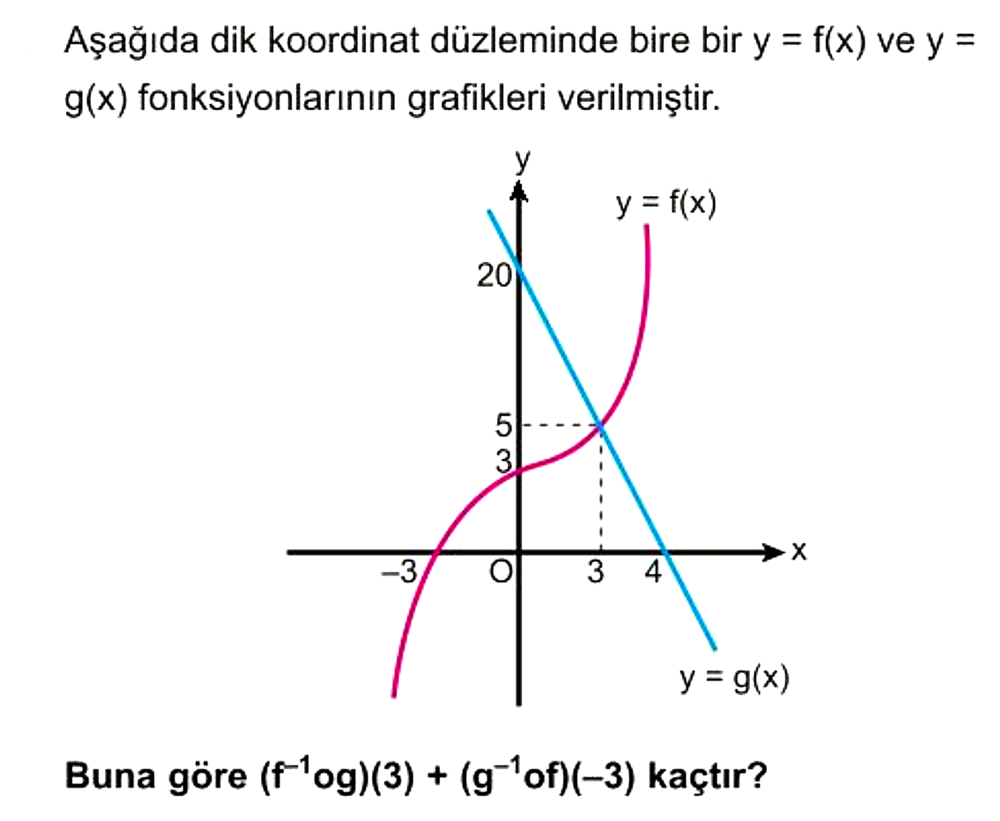
A)$3$B)$4$C)$5$D)$6$E)$7$
Çözüm
- $g(3)=5$ ve $f(3)=5$: $f^{-1}(5)=3$, $(f^{-1}\circ g)(3)=3$.
- $f(-3)=0$ ve $g(4)=0$: $g^{-1}(0)=4$.
- $(g^{-1}\circ f)(-3)=4$; toplam $7$ (E).
Cevap: E
Soru 14Cevap: B
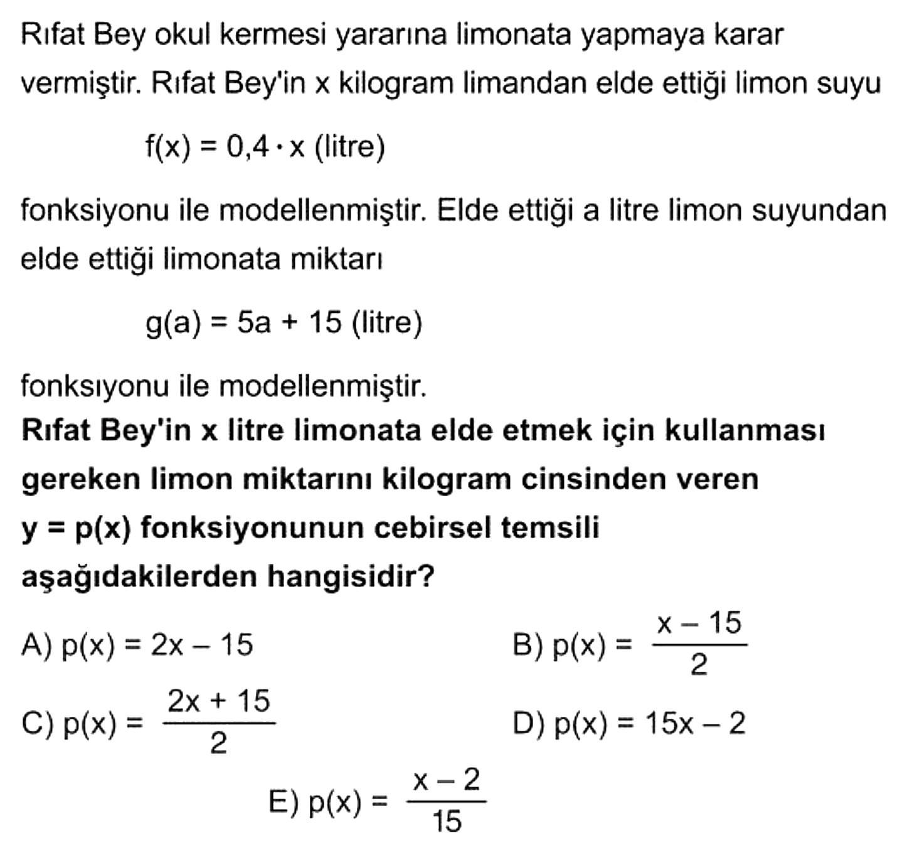
Çözüm
- $h(x)=2x+15$ litre limonata verir.
- Ters işlem: $y=2x+15\Rightarrow x=\dfrac{y-15}{2}$.
- $p(x)=\dfrac{x-15}{2}$ (B).
Cevap: B
Soru 15Cevap: E
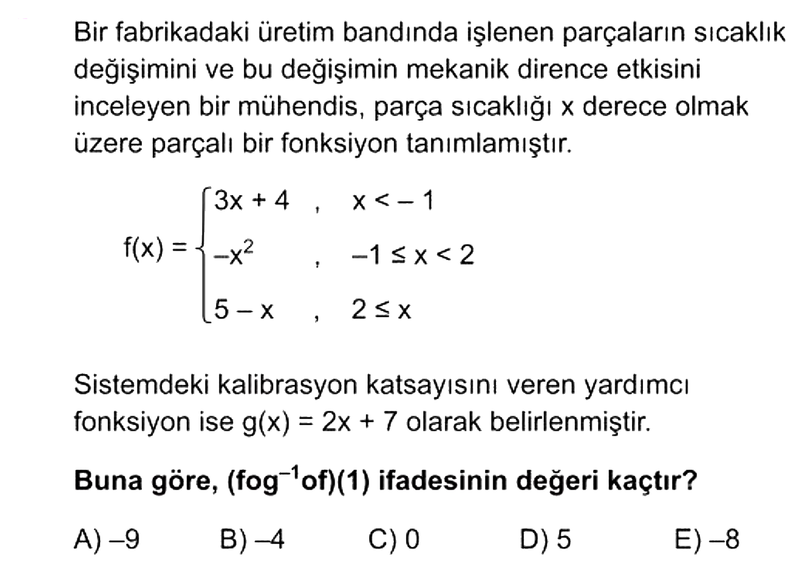
Çözüm
- $-1\le1\lt2$: $f(1)=-1$.
- $g^{-1}(-1)$: $2x+7=-1\Rightarrow x=-4$.
- $-4\lt-1$: $f(-4)=-8$ (E).
Cevap: E
Soru 16Cevap: D
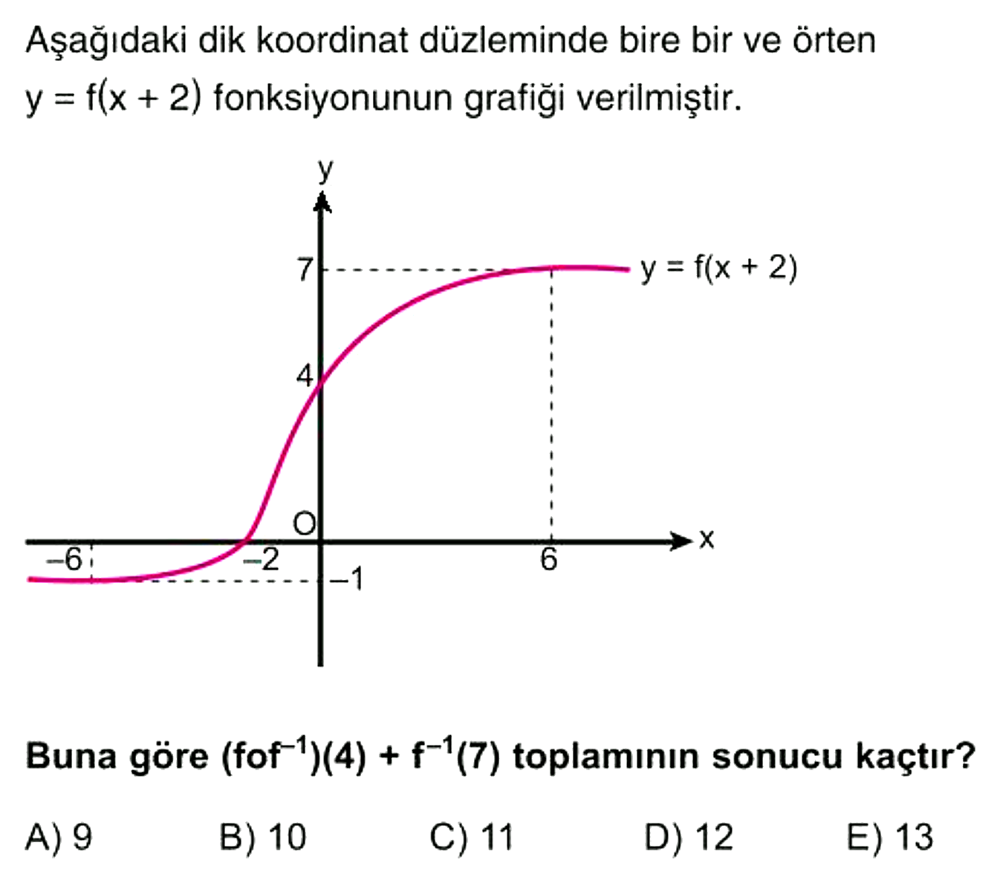
Çözüm
- $(f\circ f^{-1})(4)=4$.
- Grafikte $f(x+2)=7$ için $x=6$: $f(8)=7$, $f^{-1}(7)=8$.
- Toplam $12$ (D).
Cevap: D
Soru 17Cevap: B
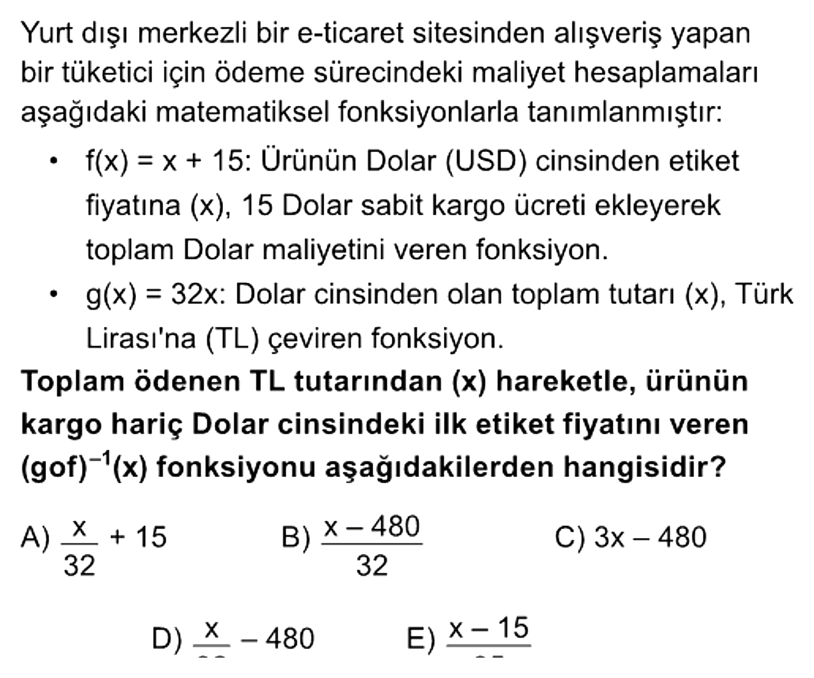
Çözüm
- $(g\circ f)(x)=32(x+15)=32x+480$ (TL).
- Tersi için $y=32x+480\Rightarrow x=\dfrac{y-480}{32}$.
- $(g\circ f)^{-1}(x)=\dfrac{x-480}{32}$ (B).
Cevap: B
Soru 18Cevap: E
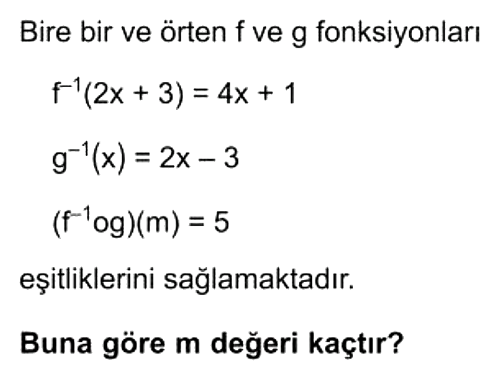
A)$3$B)$4$C)$5$D)$6$E)$7$
Çözüm
- $f^{-1}(2x+3)=4x+1\Rightarrow f^{-1}(t)=2t-5$; $g^{-1}(x)=2x-3\Rightarrow g(x)=\dfrac{x+3}{2}$.
- $(f^{-1}\circ g)(m)=(m+3)-5=m-2$.
- $m-2=5\Rightarrow m=7$ (E).
Cevap: E
Soru 19Cevap: D
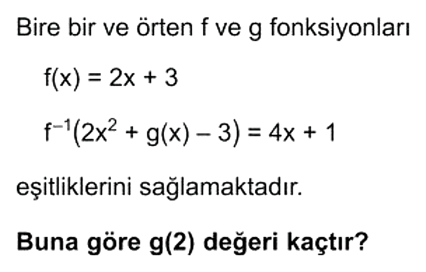
A)$8$B)$10$C)$12$D)$16$E)$20$
Çözüm
- $2x^2+g(x)-3=f(4x+1)=8x+5$.
- $g(x)=-2x^2+8x+8$.
- $g(2)=-8+16+8=16$ (D).
Cevap: D
Soru 20Cevap: C
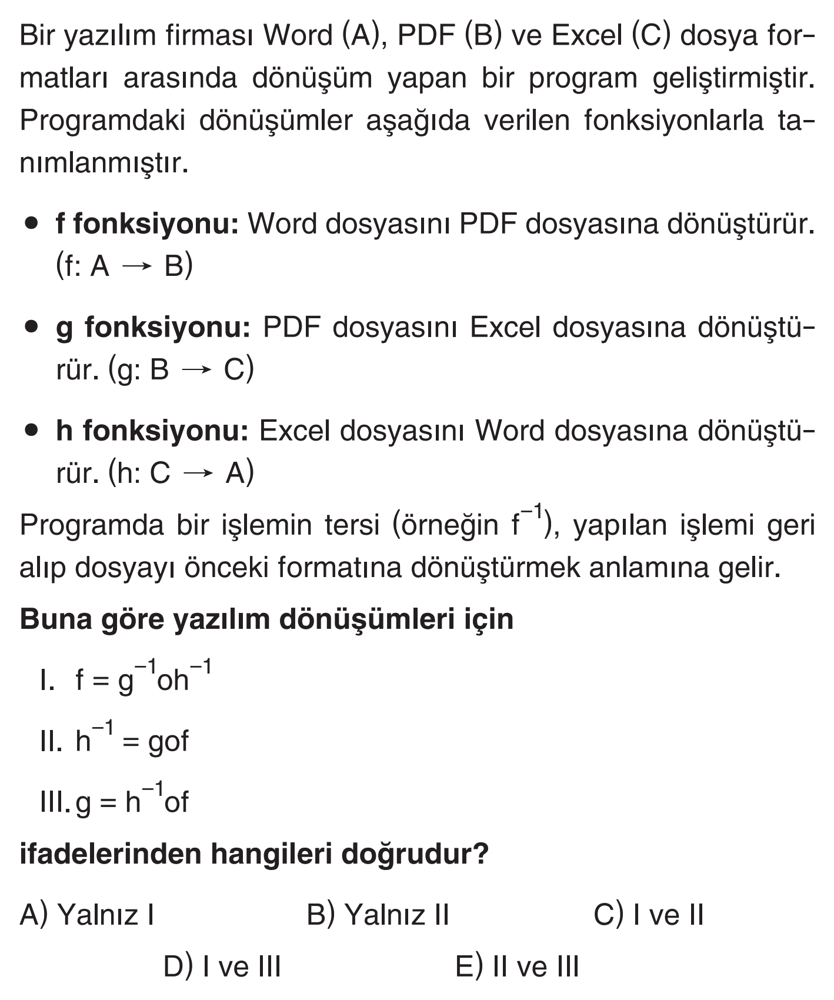
Çözüm
- Word→PDF→Excel→Word: $h\circ g\circ f=I$.
- $f=(h\circ g)^{-1}=g^{-1}\circ h^{-1}$ (I doğru); $g\circ f=h^{-1}$ (II doğru).
- $g=h^{-1}\circ f^{-1}$ olmalıdır; $h^{-1}\circ f$ değil (III yanlış). Cevap I ve II (C).
Cevap: C
Soru 21Cevap: B
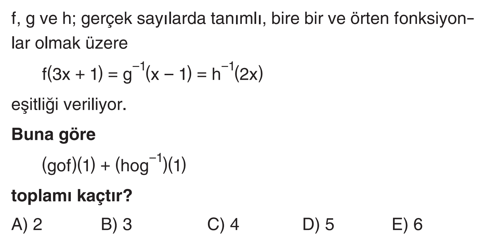
Çözüm
- $x=0$: $f(1)=g^{-1}(-1)\Rightarrow(g\circ f)(1)=g(g^{-1}(-1))=-1$.
- $x=2$: $g^{-1}(1)=h^{-1}(4)\Rightarrow(h\circ g^{-1})(1)=h(h^{-1}(4))=4$.
- Toplam $-1+4=3$ (B).
Cevap: B
Soru 22Cevap: A
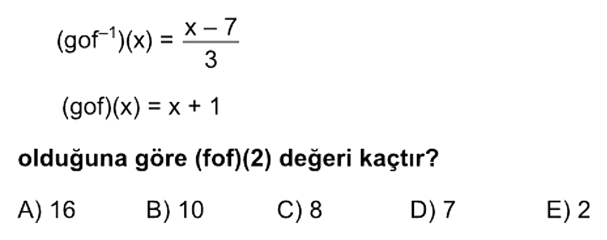
Çözüm
- $g=(g\circ f^{-1})\circ f$: $g(x)=\dfrac{f(x)-7}{3}$.
- $(g\circ f)(x)=\dfrac{f(f(x))-7}{3}=x+1\Rightarrow f(f(x))=3x+10$.
- $(f\circ f)(2)=16$ (A).
Cevap: A
Soru 23Cevap: E
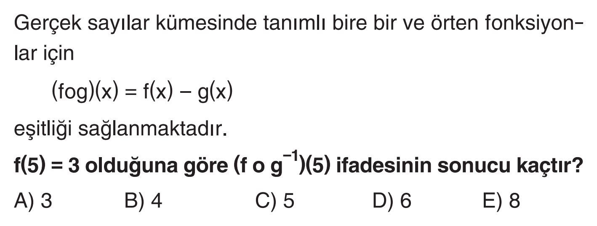
Çözüm
- $f(g(x))=f(x)-g(x)$ eşitliğinde $x$ yerine $g^{-1}(x)$ yazılır.
- $f(x)=f(g^{-1}(x))-x$.
- $x=5$: $3=(f\circ g^{-1})(5)-5\Rightarrow(f\circ g^{-1})(5)=8$ (E).
Cevap: E
Soru 24Cevap: C
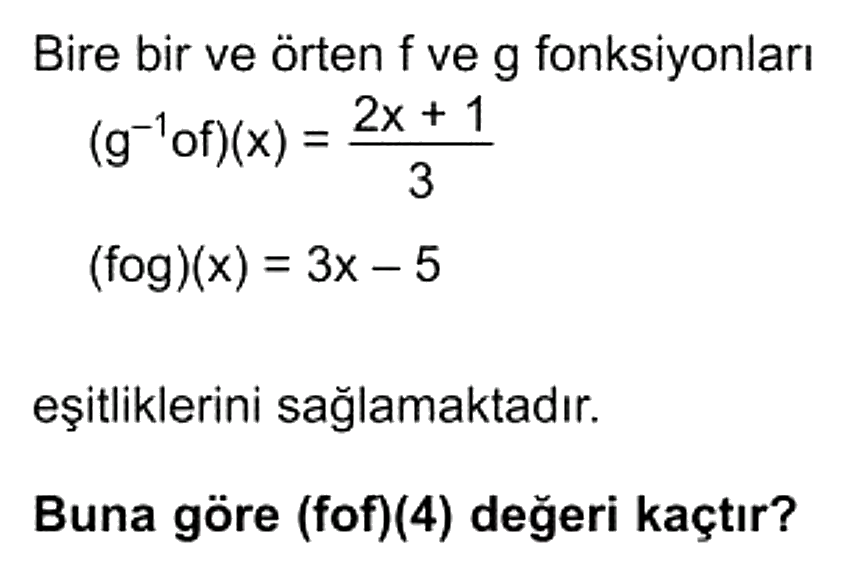
A)$0$B)$2$C)$4$D)$6$E)$8$
Çözüm
- $f\circ f=(f\circ g)\circ(g^{-1}\circ f)$.
- $f(f(x))=3\cdot\dfrac{2x+1}{3}-5=2x-4$.
- $(f\circ f)(4)=4$ (C).
Cevap: C